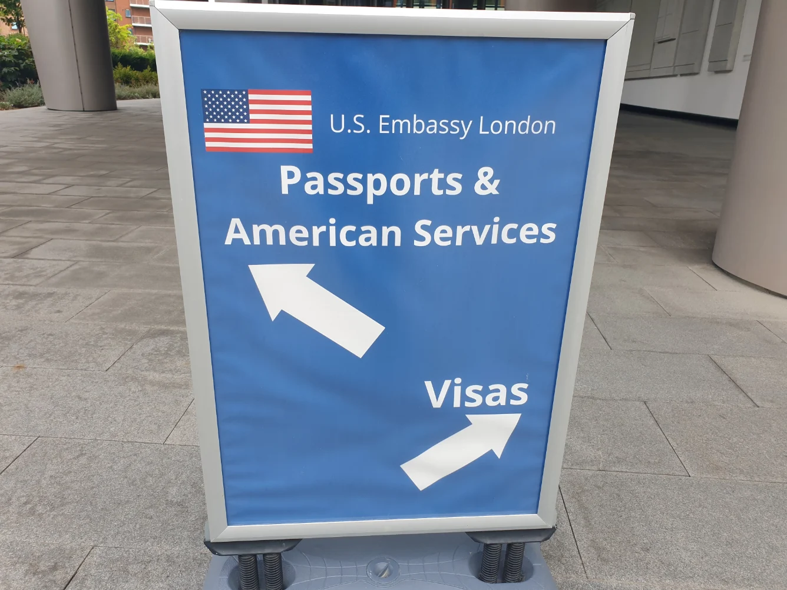
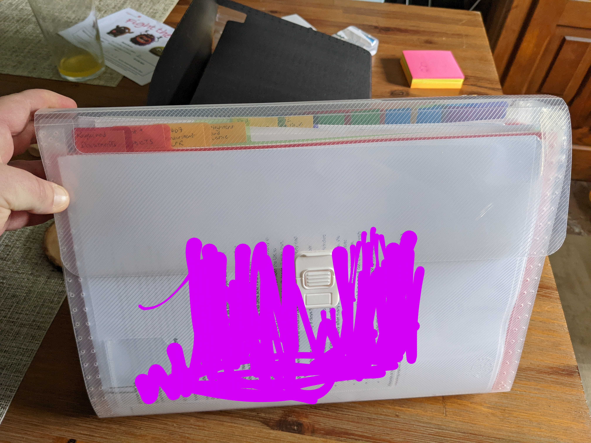
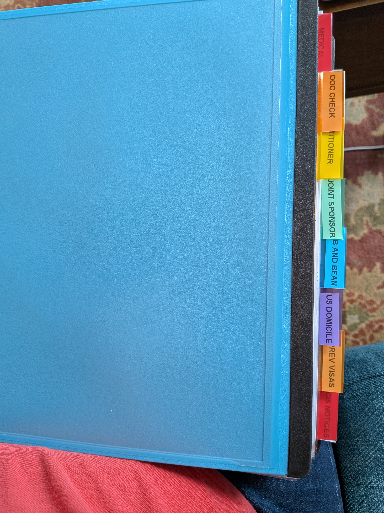

This guide covers consular processing of US family-based immigrant visas through the US Embassy in London. It covers IR and F visa categories for spouses (IR-1/CR-1), children (IR-2), parents (IR-5), and family preference (F visas).
Core principle
This process rewards overpreparation. When in doubt, follow the strictest interpretation of official guidance — supply more than asked, document more than required, and leave nothing to chance.
What this guide does NOT cover
Local I-130 / DCF filing — used when a US citizen resides in the UK and meets exceptional criteria
Adjustment of Status (AOS) — used when the beneficiary is already inside the United States
Policy update — 22 May 2026
USCIS has announced that Adjustment of Status will be granted only in extraordinary circumstances. Those previously expecting to adjust status from within the United States will now need to follow the consular processing route covered by this guide.
If you have a pending I-485: The memo does not automatically cancel or convert pending applications to consular processing. However, USCIS officers are now directed to deny AOS on discretionary grounds even where statutory eligibility is met, unless extraordinary circumstances apply. Anyone with a pending AOS application should seek qualified immigration legal advice urgently.
Immediate Relative (IR) visas have no annual cap — once the I-130 is approved the case moves straight to NVC. Family Preference (F) visas are subject to annual numerical limits and require the priority date to be current on the Visa Bulletin before NVC processing begins.
IR visas vs F visas
IR (Immediate Relative) visas — CR1, IR1, IR2, IR5 — are not subject to annual numerical limits. Once the I-130 is approved, the case moves straight through NVC and into the embassy queue. The timelines in this tracker reflect IR cases.
F (Family Preference) visas — F1, F2A, F2B, F3, F4 — are subject to annual caps and can have multi-year waiting periods. Before the embassy queue is relevant, the beneficiary's priority date must first become current on the monthly Visa Bulletin. Once current, the case enters NVC processing and follows the same London embassy process as IR cases. F visa holders should monitor the Visa Bulletin closely — the embassy queue only begins once a visa number is available. [Visa Bulletin]
CR1
Spouse of US citizen, married <2 years at US entry. Conditional green card, valid 2 years. Requires I-751 to remove conditions before permanent residency and citizenship eligibility.
Evidence at filing: This is the highest scrutiny category — USCIS is assessing fraud risk, not romance. Lack of financial integration is the most common weakness. Include: joint financial accounts, lease or mortgage in both names, insurance policies naming each other as beneficiaries, tax returns (joint preferred), photos over time organised with name/date/location, and travel history and communication logs.
Spouse of US citizen, married ≥2 years at US entry. Green card valid 10 years. No I-751 required. A CR1 automatically converts to IR1 if the marriage crosses 2 years before entry.
Evidence at filing: This is the highest scrutiny category — USCIS is assessing fraud risk, not romance. Lack of financial integration is the most common weakness. Include: joint financial accounts, lease or mortgage in both names, insurance policies naming each other as beneficiaries, tax returns (joint preferred), photos over time organised with name/date/location, and travel history and communication logs.
Unmarried child under 21 of a US citizen. Child must not be a US citizen at birth (if so, CRBA applies instead). Can be CR2 (parents married <2 years at entry) or IR2 (≥2 years).
Evidence at filing: Child's birth certificate naming both parents. If stepchild: marriage certificate of petitioner and biological parent. If biological parent is not the petitioner: evidence of legal custody or relationship. Proof of petitioner's US citizenship.
Parent of a US citizen, where the petitioner is 21 or older. No annual cap. Green card valid 10 years. The US citizen child files the I-130 as the petitioner.
Evidence at filing: Petitioner's birth certificate naming the parent being sponsored. Proof of petitioner's US citizenship. If sponsoring a stepparent: marriage certificate of biological parent and stepparent, plus evidence that the marriage occurred before the petitioner turned 18.
Classification is determined at US entry, not at I-130 approval. Carry your original marriage certificate when entering. If your marriage crosses the 2-year mark before you enter, bring proof of that. The same applies to CR2/IR2 for children.
These categories require the priority date to be current on the monthly Visa Bulletin before NVC processing begins. Waits can range from months to over a decade depending on category and country of chargeability.
F1
Unmarried adult child (21+) of a US citizen.
Evidence at filing: Child's birth certificate naming petitioner. Proof of petitioner's US citizenship. Evidence of child's unmarried status (e.g. statutory declaration). If the child has previously been married: divorce or death certificate for each prior marriage.
Spouse and unmarried children under 21 of a lawful permanent resident (LPR). Shortest wait among preference categories.
Evidence at filing: Marriage certificate (spouse) or birth certificate (child). Copy of petitioner's green card (front and back). Proof of termination of any prior marriages. Bona fide marriage evidence for spouse petitions.
Unmarried adult child (21+) of a lawful permanent resident (LPR).
Evidence at filing: Child's birth certificate naming petitioner. Copy of petitioner's green card (front and back). Evidence of child's unmarried status. Divorce or death certificate for any prior marriages of the child.
Married child of a US citizen (any age). Spouse and minor children can be included as derivatives.
Evidence at filing: Child's birth certificate naming petitioner. Proof of petitioner's US citizenship. Child's marriage certificate. Derivative beneficiaries (spouse, children): their birth or marriage certificates.
Sibling of a US citizen, where the petitioner is 21 or older. Longest waits of all preference categories — often 10+ years depending on country.
Evidence at filing: Birth certificates of both petitioner and sibling showing at least one shared parent. Proof of petitioner's US citizenship. If the shared parent's name differs on documents (e.g. through marriage): marriage certificate or name change documentation. Derivative beneficiaries (sibling's spouse and children): their birth or marriage certificates.
Once a priority date is current and NVC processing begins, all categories follow the same London embassy process described in this guide. The timelines on the data page reflect IR cases — F visa holders should expect the same steps but cannot rely on the same wait time figures.
The I-130 establishes a qualifying relationship between petitioner and beneficiary. It does not assess finances or issue a visa. Output is an approval (NOA2), which moves the case to the National Visa Center. [USCIS I-130]
1
File I-130
Submit via USCIS Online Account or by mail. Upload civil documents and supporting evidence.
2
Receipt (NOA1)
Case accepted. Priority date assigned. IR visas: roughly 12 months processing but historically longer — many delayed cases seen over 2 years. Once approved, the case moves directly to NVC. F visas: the priority date must first become current on the Visa Bulletin before NVC processing begins — this wait can be years depending on category and country of chargeability. Monitor the Visa Bulletin monthly.
3
Adjudication
Case sits in queue. Status cycles through "Case Was Received" → "Actively Being Reviewed" → approval.
4
RFE (if issued)
USCIS requests missing or insufficient evidence. Clock pauses until response submitted. Front-loading evidence at filing reduces RFE risk significantly.
5
Decision (NOA2)
Approval forwards case to NVC. Denial allows appeal via I-290B or refiling a new I-130.
Transgender and non-binary applicants
Under current US policy (April 2025), USCIS determines sex from the original birth certificate and only recognises male or female markers. If your documents carry inconsistent sex markers, this can cause delays at USCIS, NVC, and the embassy medical. See the Medical section of this guide for full guidance and support resources.
If you are filing I-130 petitions for multiple family members — for example, a spouse and a child, or a parent and a sibling — USCIS will not automatically link them. You need to make the connection explicit so the cases move through NVC together. Follow these steps:
1
Label and upload receipt notices
Upload each I-130 receipt notice (NOA1) to the other family member's USCIS account. Label the file clearly — e.g. "PLEASE ATTACH – FAMILY CONNECTION" or "FAMILY ATTACHMENT: Other Applicant's I-130".
2
Cross-upload identity documents
Upload a copy of the other applicant's birth certificate or passport to the opposite I-130 file. For example: the child's birth certificate goes in the spouse's I-130 upload, and vice versa.
3
Complete Form I-130 Part 4, Question 25
List the other applicant (spouse, child, stepchild) in the relevant field. If already submitted, upload a written amendment noting the family connection.
4
Upload supporting family evidence
Whoever's I-130 was filed first should upload a PDF with family evidence labelled "FAMILY UNIT EVIDENCE". For stepchildren, this could include photos of all three family members together, labelled with names and dates.
5
Request USCIS to link applications (optional)
Use the Emma chat tool at USCIS.gov to request a Tier 2 officer and ask them to link the applications. This is optional — the steps above should already establish the connection. USCIS may not respond to the chat request.
6
If one case gets stuck at NVC
If one case is at NVC and the other is still with USCIS, request an expedite on the pending I-130 using "family unity" as the reason. Once expedited, USCIS will typically pull the other case to match.
Make it painfully obvious
USCIS must review everything you upload. Keep your documentation high quality over high quantity — clear labels, organised files, and explicit connections between cases matter more than volume.
If a child is born in the UK to a US citizen parent, they may already be a US citizen at birth. If so, they do not need an immigrant visa — they need a CRBA (Consular Report of Birth Abroad) to prove that citizenship, plus a US passport to travel. This is handled entirely separately from the I-130 process.
CRBA vs IR2
If a child is a US citizen at birth, filing an I-130 (IR2) is the wrong route. Assess CRBA eligibility first — it is faster, cleaner, and bypasses the entire visa process. The operative question is whether the US citizen parent meets the physical presence requirement.
If the child is not a US citizen at birth, proceed with I-130 as an IR2.
Official proof of US citizenship at birth for a child born abroad to a US citizen parent
Must be applied for before age 18 — ideally soon after birth
Strongly recommended before the child travels to the US, as US citizens must enter on a US passport
A single appointment covers the CRBA, first US passport, and optional SSN application
Child born in UK → apply at US Embassy London
Child born elsewhere but living in UK → apply in London, but the case is forwarded to the embassy in the country of birth → longer processing
Child already in the US → cannot apply for CRBA; citizenship is adjudicated via first US passport application instead
The US citizen parent must prove they lived in the US for at least 5 years before the child's birth, including at least 2 years after age 14. This is where most cases succeed or fail — weak evidence here causes delays or refusal. [travel.state.gov: Birth Abroad]
Physical presence does not need to be continuous — visits of any length count. However, any time outside the US must be excluded, including holidays and short trips. It does not matter whether you were in the US legally or illegally, or whether you held US citizenship during that time.
Counts towards physical presence
Time actually within US borders (non-continuous periods add up)
Honorable US military service overseas, or as a dependent of someone serving — requires official military records
Employment with the US government or certain international organisations overseas, or as a dependent — requires official records
What works as evidence — and what doesn't
Accepted evidence includes:
Official school transcripts from primary, secondary, or university
W-2 forms with a letter from the employer's HR department
Passports showing both US entries and exits (different passports may make travel dates hard to establish)
Military records (Statement of Service or DD-214)
Bank or credit card statements showing activity at specific US locations (e.g. ATM withdrawals, US restaurant charges)
US medical records — but only for the exact dates of treatment
CBP entry/exit records via FOIA request at cbp.gov
Not accepted as evidence of physical presence:
US driver's licence (does not show when or for how long you were present)
Diploma without transcripts (credits may have been earned abroad)
Lease or mortgage (many people maintain property in multiple countries)
Cell phone records
Bank statements that don't show a US location
Social media posts mentioning being in the US
Income tax forms without pay stubs or W-2s (taxes can be filed from anywhere)
Complete the eCRBA via MyTravelGov. Also complete: DS-11 (passport application — leave unsigned until the appointment), and SS-5 (optional SSN application if child is under 5). Upload documents and pay the CRBA fee ($100) online.
2
Assemble evidence
Gather all documents before booking the appointment. The consular officer will assess citizenship transmission at the interview — incomplete evidence is the main cause of delays.
3
Pay fees
CRBA: $100 · Passport under 16: $135 · Passport ages 16–17: $165. Pay online (preferred) or at the appointment.
4
Book appointment
Email the London CRBA unit with the child's name, date of birth, and CRBA case number. You must complete the eCRBA online before requesting an appointment.
5
Attend interview
The child must attend. Both parents should attend; the US citizen parent must attend. If the non-US parent cannot attend, a DS-3053 notarized parental consent form is required (must be notarized within 3 months). The consular officer reviews eligibility, assesses physical presence evidence, and may request additional documents. Bring originals and photocopies of everything.
6
Processing and delivery
Straightforward UK-born cases typically take ~4 weeks. Complex cases (foreign birth, unclear transmission) take longer. Outputs: CRBA certificate + first US passport, delivered via prepaid Royal Mail Special Delivery envelope (mandatory — you must provide this). SSN, if applied for, arrives separately from SSA and typically takes ~4 months.
Child's documents
Long-form UK birth certificate (with both parents listed)
Passport photo
Child's other nationality passport (if applicable — you do not have to surrender it)
US citizen parent's documents
Proof of US citizenship (US passport or naturalization certificate)
Evidence of 5 years physical presence in the US before child's birth, including 2 years after age 14
Parent relationship documents
Marriage certificate (if applicable)
Divorce or death certificates (if prior marriages)
Non-US parent's documents
Passport or national ID
DS-3053 notarized parental consent (if not attending in person)
Logistics — do not forget
Prepaid Royal Mail Special Delivery return envelope — this is mandatory and must be brought to the appointment. Without it the CRBA and passport cannot be returned to you.
The DS-11 must be left unsigned until you are at the appointment — do not sign it in advance.
Not eligible for CRBA — if the physical presence requirement is not met, the child may need the Child Citizenship Act route or an I-130 immigrant visa instead
Multiple children — separate appointments required per child, though they can be coordinated to run consecutively
Lost CRBA — replacements must be requested from the US Department of State, not the London embassy
Born outside UK — case is forwarded to the country of birth embassy; processing takes longer
After USCIS approves the I-130, your case transfers to the National Visa Center (NVC). NVC collects fees, the DS-260 visa application, financial documents, and civil documents before forwarding the case to the US Embassy London for interview scheduling. The goal of this stage is to reach Documentarily Qualified (DQ) status.
Full step-by-step NVC guidance is available via the community Discord NVC channels, which follow the official NVC process at Travel.State.gov.
⚠️ Most common RFEs (Request for Evidence)
Missing or incomplete Form I-864 (Affidavit of Support): Joint sponsors and sponsors' spouses must also complete separate I-864s. Incomplete tax returns (missing all pages) trigger RFE immediately.
Financial documents older than 6 months: Bank statements must be dated within 6 months. NVC may request updated statements even if earlier ones were accepted.
Inconsistent information between forms: Mismatched names, birthdates, or addresses across the I-130, I-485, DS-260, and civil documents cause RFEs. Use exact legal names consistently.
Police certificates missing or expired: Certificates must be original or certified. UK ACRO must be dated within 12 months of interview. Any country lived in for 12+ months after age 16 requires a certificate.
Medical exam (I-693) submitted too early: The exam must be completed within 6 months of the consular interview. Submitting too early may require a repeat exam at your cost.
Prevention is faster than correction
Front-load your documentation before submitting to NVC. Include supporting evidence for every claim: multiple bank statements, tax transcripts from HMRC, employment verification letters with dates, and detailed personal histories with dates and locations.
🚀 Getting Started
Usually 1–7 days after I-130 approval (occasionally 2–3 weeks — not a cause for concern). NVC emails both the petitioner and beneficiary from National_Visa_Center@state.gov with the subject Notice of Immigrant Visa Case Creation. The email contains your NVC Case Number (3 letters + 10 digits) and Invoice ID Number (IVSCA + 11 digits). Save both — you need them to access CEAC.
12-month inactivity rule
If you do not log into CEAC or communicate with NVC for 12 months, your case can be terminated under INA §203(g) — even if NVC has not contacted you. Log in and upload documents every 6–11 months to keep the case active if your process is slow.
Log in at ceac.state.gov/IV using your Case Number and Invoice ID. It can take up to 72 hours after the Welcome Letter for the account to activate. CEAC is where you pay fees, submit the DS-260, upload documents, and receive messages from NVC.
💰 Payments & Application
Fee
Amount
Immigrant Visa (IV) Application Processing Fee
$325
Affidavit of Support Fee
$120
Requires a US bank account. The two fees must be paid sequentially — not simultaneously. Allow up to 10 calendar days for fees to clear before DS-260 becomes accessible. More info: NVC fee guidance.
The petitioner must meet 125% of the US Federal Poverty Guidelines based on household size. If income is insufficient or the petitioner lives abroad (foreign income typically counts as $0), a joint sponsor is required. Use the NVC Poverty Guidelines Calculator to check eligibility.
The I-864 must be wet signed — print, sign by hand, scan back in. Do not use a digital or e-signature. The I-864EZ is available for simple cases but many users encounter issues with it; the standard I-864 is recommended for all.
Asset-based sponsorship risk at London
London has demonstrated reluctance to rely solely on assets. Cases relying primarily on savings, property equity, or investments have received 221(g) even when technically meeting asset thresholds. If income is close to the threshold, irregular, or asset-heavy — secure a joint sponsor before submission.
I-864 / AOS preparation worksheet
Use the worksheet to prepare all answers before entering CEAC. The form is long and CEAC is unreliable — working from a completed worksheet avoids losing progress.
IRS Tax Return Transcript — most recent year, from IRS.gov (create an account via ID.me if you don't have one). Use Tax Return Transcripts specifically — they have been accepted and verified by the IRS. Up to 3 years of transcripts is advised.
W-2s / 1099s
Proof of current employment — employment letter and recent pay stubs
Joint sponsor: separate I-864, their own tax transcript, W-2s, proof of US status and domicile
Evidence of US domicile (even if not listed as required) — upload under "Other": driver's licence, job offer, lease, US bills, school enrollment, moving quotation, or intent letter
The DS-260 is the immigrant visa application form, completed in CEAC. [CEAC DS-260]CEAC times out after ~10 minutes of inactivity and progress is lost. Prepare all answers in advance using the worksheet before logging in. Once submitted you cannot edit it — double-check everything.
You will need: passport details, all addresses from age 16, employment history (10 years), travel history (5 years), family information, and US contact details. Print the DS-260 confirmation page after submitting — it is required at the medical and interview.
For the vaccination question: if you plan to get missing vaccines at the medical, select "Other" and explain in the dialogue box.
For children who are US citizens (e.g. via CRBA), the answer to "Is the child immigrating with you?" is No — they are returning as a citizen, not immigrating.
DS-260 preparation worksheet
Complete this before logging into CEAC to avoid losing progress to timeouts.
Divorce or death certificates (if applicable — all prior marriages)
UK ACRO Police Certificate — required for all applicants aged 16+. Valid 12 months for embassy purposes regardless of any shorter local validity.
Foreign police certificates — required for every country lived in for 12+ months after age 16, or any country of citizenship. Use the decision tree below to confirm what you need.
Passport biographic page
Court, prison, or military records (if applicable)
Non-English documents require certified translations. Check the NVC Document Finder / Reciprocity Schedule for country-specific requirements. Scans must be colour, all pages included, max 4MB per file, PDF preferred. For certified translations, community members recommend Rush Translate.
After uploading all documents, click Submit Documents — uploading alone does not enter you into the review queue. Do not mail originals to NVC; bring them to the interview.
After submission, NVC reviews your case. Typical review time is 14 days if no issues.
Possible outcomes:
RFE (Request for Evidence) — fix the issue, re-upload, resubmit. The 14-day clock restarts after each resubmission.
DQ (Documentarily Qualified) — all documents accepted. Case moves to embassy scheduling queue. Your CEAC status will still show "At NVC" until you receive your Interview Letter.
If you have not heard from NVC within 10 business days, you should submit a Public Inquiry on the NVC website: https://travel.state.gov/content/travel/en/us-visas/visa-information-resources/ask-nvc.html
Timing your NVC completion strategically
Some applicants deliberately delay paying NVC fees or submitting documents to control when their case enters the London embassy queue. Reasons include: waiting for a more convenient interview season, aligning with a job start date, or avoiding school-year disruption.
This is a legitimate personal decision. There is no penalty for taking longer at NVC, and your I-130 approval date does not expire. However, be aware that the London embassy queue — and therefore interview slot availability — may be longer or shorter by the time you DQ, and this is difficult to predict more than a few months ahead.
If you do hold at NVC, consider the Visa Bulletin and any known backlogs when deciding timing. Community data on the tracker reflects the current London queue position.
⚠️ 12-month inactivity rule — INA §203(g)
If you do not log into CEAC or communicate with NVC for 12 months, your case can be terminated — even if NVC has not contacted you. If you are holding your case deliberately, log in and upload documents every 6–11 months to keep it active.
Top NVC RFEs
Uploading documents to the wrong CEAC category
Missing police certificates for countries lived in
Incomplete financial evidence — assets without income-based sponsorship
I-864 digitally signed instead of wet signed
PCC placeholder not replaced with the actual certificate before interview
Adding a joint sponsor mid-process causes a 2–3 day CEAC lockout — plan ahead
NVC document checklist
Full submission checklist with financial documents, civil documents, upload standards, and failure points.
Use this to work out which police certificates you need. You may need more than one. All must be original or certified — photocopies not accepted. [travel.state.gov — Civil Documents]
If you hold citizenship of another country — act early
If you are a citizen of a country you no longer live in — even if you left as a child — you almost certainly need a police certificate from that country. A visa will not be issued until this requirement is fulfilled satisfactorily.
The UK ACRO certificate is valid for 12 months. Police certificates from other countries are generally valid indefinitely, provided you have not returned to live there — but order early regardless, as processing times vary widely by country.
Obtaining a police certificate from a country you do not currently reside in can take months and may require you to travel there in person. Identify this requirement early and start the process as soon as you receive your Interview Letter — do not leave it until the document check.
If you…
And…
You need a certificate from…
Hold citizenship of any country
You are 16 or older, and lived there for more than 6 months at any point in your life — including as a child
That country — even if you left long ago
Are 16 or older
Currently living in a country different from your nationality, for more than 6 months
Your current country of residence
Have ever lived in another country for 12+ months
Were 16 or older when you lived there
That country
Were ever arrested anywhere
Regardless of age, length of stay, or outcome
The city and/or country where you were arrested
Note: Present and former US residents do not need to submit a US police certificate.
Validity (London embassy guidance): The UK police certificate (ACRO) is valid for 12 months from the date of issuance. All other police certificates are valid indefinitely, provided you have not returned to that country and resided there for 6+ months (if it is your country of birth or current residence) or 12+ months (any other country). Source: US Embassy London FAQ
After DQ, your case is complete at NVC and enters the embassy scheduling queue. This stage is a waiting and preparation phase. Your CEAC status will still show "At NVC" until your Interview Letter arrives.
What DQ does NOT mean
Your interview has been scheduled
Your case has moved to the embassy in CEAC — status still shows "At NVC"
That you are guaranteed a visa
That additional documentation won't be required
Current Average
DQ → Interview Letter
73 dayslast 6 months · 57d all time
Community average — excludes expedited cases. The wait has been increasing. If your DQ is recent, plan for the longer end of the range.
IL → Interview: 58 dayslast 6 months · 62d all time
DQ → Interview total: 130 dayslast 6 months
Figures update as members submit timelines. See the data page for live numbers.
How IL drops work
The embassy schedules interviews in batches, not continuously. Batches are not on a fixed schedule but tend to arrive at least once monthly — historically often in the second week of the month, though this varies. Occasionally there are multiple drops in one month. Whether you receive an IL in a given batch depends on your DQ date relative to others in the queue.
Multiple family members with different DQ dates — action required
If you have multiple applicants on the same case — for example, a spouse and children who were ineligible for a CRBA, or stepchildren — they may reach DQ at different times and be assigned different interview dates.
You need to contact the embassy directly and ask for all cases to be combined into the same interview appointment. Include the IOE numbers (case reference numbers) for all applicants in the email. The embassy can bundle them together so everyone is seen on the same day.
Do this as soon as you are aware of the differing DQ dates — do not wait until ILs have already been issued separately.
When do ILs arrive?
Based on observed London channel data, ILs arrive by email from National_Visa_Center@state.gov with the subject Immigrant Visa Interview Appointment, typically early-to-mid afternoon UK time (around 13:30–15:30), most often mid-week (Tue–Thu). A CEAC status update follows — it will show your case as being at the embassy.
Observed drop times from the London community (earliest arrival recorded per drop):
Community data — americanvisaguide.com
Date
Day
Earliest time (UK)
17 April 2026
Friday
16:02
31 March 2026
Tuesday
15:16
4 March 2026
Wednesday
14:08
13 February 2026
Friday
13:51
15 January 2026
Thursday
13:53
1 January 2026
Thursday
13:59
11 December 2025
Thursday
13:55
26 November 2025
Wednesday
15:03
11 November 2025
Tuesday
14:02
10 October 2025
Friday
15:03
11 September 2025
Thursday
15:38
10 September 2025
Wednesday
15:03
11 August 2025
Monday
15:09
21 July 2025
Monday
15:00
6 June 2025
Friday
15:31
Times are the earliest recorded arrival in the London community channel per drop — other members in the same drop may receive theirs later. All times are UK local time.
IL → Interview: observed pattern
IL received
Interview scheduled
Pattern observed from London community members. IL → interview is typically ~2 months.
What the IL email looks like
The Interview Letter arrives by email from National_Visa_Center@state.gov with the subject Immigrant Visa Interview Appointment, typically early-to-mid afternoon UK time (13:30–15:30), most often mid-week (Tue–Thu). A CEAC status update follows.
Subject: U.S. Immigrant visa application – LND01234567891
Immigrant Visa Unit · Embassy of the United States of America · 33 Nine Elms Lane, London, SW11 7US
Dear [Beneficiary],
Case Number: LND01234567891
Interview: [TIME] [DAY], [DATE]
We are pleased to confirm that the Immigrant Visa Unit at the U.S. Embassy in London has received an approved petition in your name. To complete your application, you must attend two separate appointments at the U.S. Embassy:
Document Review – Immediately following your medical examination
Visa Interview – With an immigration consular officer
[Email continues with steps 1–4 and public charge statement — see guide sections below]
Actions after receiving your IL
Two things to action as soon as you can
1. Book your medical via VisaMedicals — appointment windows open monthly and fill quickly. The medical must be 10 working days before your interview date. You are required to attend the same-day embassy document check afterwards (window: 11:45 AM – 1:00 PM).
2. Register your interview via AIS — you must select your passport return method at this stage: home delivery or Mail Boxes Etc collection (Holborn, Angel, or Belfast). If you do not complete this, the embassy has no way to return your passport to you. Note: registration may take a few days to appear after the IL arrives.
Registration on AIS may take a few days after the IL arrives. If you have previously used AIS for a non-immigrant visa (e.g. B1/B2), you will likely need to create a new account for the immigrant visa process. Escalate after ~5 business days if unresolved: UK.Visas@gdit-gss.com
Use the waiting time to prepare
This period is your best opportunity to get organised before things accelerate. Work through this list systematically.
Documents & admin
ACRO police certificate
Valid 12 months for embassy purposes.
Standard: £68, up to 20 working days · Premium: £121, up to 2 working days
Confirm you have originals accessible: marriage certificate, birth certificate, divorce decrees. Check nothing is expiring or needs replacement.
I-864 financial documents
Recent pay stubs · Employment letter confirming salary · IRS tax transcripts (up to 3 years) · W-2s. If using a joint sponsor, ensure they have the same documents.
Passport expiry
Must be valid for at least 6 months beyond your intended US entry date. Apply for renewal now if needed.
Medical preparation
GP Summary Care Record
Request within 2–3 weeks of your medical appointment date — not before. Ask for a full patient summary including medications, significant history, and vaccinations. These do not need to be signed or stamped by the surgery.
Vaccination records
Gather records and check against CDC requirements. Common gaps: Hepatitis A & B series, Polio (must be within 12 months), Varicella.
💡 Getting missing vaccines from your GP in advance may be cheaper than at the clinic. Check the VisaMedicals website for current pricing.
Significant medical history
If you have a condition (cancer, HIV, TB, depression, or other chronic conditions), start gathering supporting documentation now: diagnosis, treatment records, current status reports from your doctor.
London logistics
Two separate trips required — one for the medical + document check, one for the interview. These cannot be combined unless you have an expedited interview.
🏥 Medical day — Marylebone
Durrants Hotel
Georgian, quiet — 5 min walk
Marylebone Hotel
Modern, slightly upmarket
Premier Inn Baker Street
Budget, reliable, very close
🏛️ Interview day — Nine Elms
Travelodge Vauxhall
Most popular — directly convenient
Novotel London Waterloo
More comfortable, 15 min walk
Premier Inn Waterloo
Budget option, well-located
Public Charge — Prepare your written statement now
Before your interview you are strongly advised to submit a written statement to LNDIVSubmissions@state.gov covering your housing, employment, and health insurance plans. Use this waiting period to draft it — it does not need to be long, but it should be specific.
Does the petitioner attend the medical or interview? No. Only the beneficiary attends both.
Do I need the original I-864 mailed to me? No. A printed copy is sufficient.
Expedited interviews
Expedited interviews are available in genuine emergency situations such as serious medical need. They are not a workaround for queue position. Community data shows 4 expedited cases — these are excluded from wait time calculations as they are not representative of the standard process.
All applicants must complete a medical exam with an approved panel physician before the interview. For the entire United Kingdom, the only approved clinic is VisaMedicals in London.
The medical must be 10 working days before your interview. Visa Medicals appointment windows open monthly (e.g. May interviews can book from approximately 1 April). Book as soon as the window opens — slots fill quickly. You are required to attend the same-day embassy document check after your medical (window: 11:45 AM – 1:00 PM). VisaMedicals will contact the embassy on your behalf if you are running late. You will be charged £100 if you cancel within 3 working days of your appointment.
Have the following ready when you call to book: full name and date of birth of all applicants, case (LND) number, visa category, interview date, ACRO police certificate, and a contact phone number or email. The medical must be 10 working days before your interview date.
Two trips to London required
Unless you have an expedited interview, everyone makes two separate trips: one for the medical and document check, one for the interview. There is no exception for distance or cost. Plan accommodation and travel well in advance.
GP Summary Care Record
Request a GP Summary Care Record from your GP — timed within 2–3 weeks of your medical appointment. It should include applicant and GP details, significant medical history, current medications, ongoing problems. Some practices also include recent appointments and vaccination history. The summary care record and vaccination history does not need to be signed or stamped by the practice.
If you have a significant medical history (cancer, HIV, TB, depression, or other serious conditions), bring supporting reports outlining diagnosis, management, treatment, and current status. If anything further is required, the doctor will tell you on the day and you can email additional documents afterwards. VisaMedicals is understanding of a range of situations — contact them with any questions ahead of time.
What to bring to the medical
Passport
Interview letter The email sent to you by NVC notifying you of your interview date and location.
DS-260 confirmation page
Courier registration confirmation (with QR code) Generated when you register your passport return on the AIS website (ais.usvisa-info.com).
GP summary dated within 2–3 weeks Does not need to be signed or stamped by the surgery or doctor — a printed or digital summary from your NHS record is sufficient.
Vaccination records Does not need to be signed or stamped — a printout from your NHS app or GP patient record is accepted.
Glasses or contact lenses (if applicable)
Medical reports for any chronic, serious, or mental health conditions (if applicable)
You will receive a pink checklist slip at the end. Bring this to the same-day embassy document check — do not lose it.
Vaccinations
Common requirements: MMR, Tetanus/Diphtheria, Hepatitis A & B, Varicella (or documented history), Polio (within 12 months — see CDC Polio addendum for UK-specific requirements), Flu (Oct–Mar only). COVID-19 is no longer required. Hepatitis B requires three doses but you only need to have started the series — remaining doses can be completed in the US. Bring official documentation of past vaccinations; they will often take your word that you had chickenpox as a child.
If you decline vaccines for medical, moral, or religious reasons, a waiver is required via USCIS I-601. The waiver process takes approximately 36 months. Until resolved, your medical will be marked inadmissible.
Pregnancy considerations
Chest X-ray is required for age 15+. You can defer until after birth or after 12-week scan. No live vaccines (MMR, Varicella) during pregnancy. Deferrals may delay visa issuance.
Mental health
The medical includes a mental health assessment. Conditions such as depression, anxiety, and other mental health diagnoses are not automatically grounds for inadmissibility — the assessment focuses on whether a condition is associated with harmful behaviour. If you have a mental health history, bring supporting documentation from your treating clinician.
Transgender and non-binary applicants — document consistency
Under current US policy (effective April 2, 2025), USCIS recognises only male and female sex markers on immigration documents. Sex is determined by what is recorded on the birth certificate issued at or nearest to the time of birth. The X gender marker option has been removed from all USCIS forms and documents.
If your documents carry different sex markers — for example, your UK passport or a legal gender recognition certificate reflects an updated marker that differs from your birth certificate, or your medical records differ from either — this is likely to cause delays or a Request for Evidence. The medical examination at VisaMedicals records sex as shown on your documents, which may create a further inconsistency in the case file.
Practical steps:
Before submitting to NVC or attending the medical, review all documents — birth certificate, passport, and any other identity documents — and identify any inconsistencies in the sex marker.
Where your documents are consistent, use the sex marker recorded on your original birth certificate on all immigration forms to minimise the risk of delays.
If you have document inconsistencies or your birth certificate does not list male or female, seek advice from an immigration attorney experienced in LGBTQ+ immigration before proceeding. Use the AILA directory to find one.
Prices subject to change. Common vaccines (MMR, Hep A&B, Varicella, Polio, Flu) are billed separately if needed — see VisaMedicals for current vaccine prices.
Same-day embassy document check
After the medical, go directly to the embassy.
Embassy document check
Address: 33 Nine Elms Lane, London SW11 7US
Window: 11:45 AM – 1:00 PM — go even if running late
Getting there from VisaMedicals:
Victoria line towards Brixton from Oxford Circus → Vauxhall, ~10 min walk — £3.10 contactless
Bus 2 towards West Norwood from Portman Sq → Vauxhall Bus Station, ~12 min walk — £1.75 contactless
Do not stand in the main queue. On the right-hand side of the building, behind the main queue, there is a window with a sign that says "Pass Back". That is where you go. Present your pink checklist slip and passport. If you feel unsure, ask the staff at the head of the queue — they will direct you.
Inside: airport-style security, show your DS-260 confirmation, receive a queue number, wait upstairs, get fingerprinted, and receive a sealed "Do Not Tamper" envelope containing your documents for your interview — bring this to your visa interview. Documents are typically checked one by one — having them organised in separate sleeves or sections makes this smoother. Many members use one binder for the medical and a separate one for the embassy.
Bring to the document check
Passport
Pink checklist slip (from medical)
DS-260 confirmation page
Civil documents (originals)
Realistic timing
Medical arrival 8:40 AM → finished ~10:15 AM. Coffee break. Document check queue opens 11:45 AM → finished ~12:15 PM. The document check is usually quick and staff will confirm everything is in order — many members find this reassuring.
Community medical experiences
Reported by London channel members. All found the process professional and manageable.
Josie — March 2025
"Really smooth and reassuring." Submitted passport, SCR, vaccine records. 20-minute wait, then doctor review, bloods, physical exam, chest X-ray. Two vaccines administered. Staff calm and respectful. Tip: moisturise your hands before fingerprints. Total cost £475.
CF97 — November 2025
Arrived 08:55 for 09:30 appointment. Chest X-ray (~30 min wait), doctor exam (~20 min wait), nurse (~25 min wait). Tetanus booster, Hep B, and flu vaccine given. Left clinic at 11:04. Arrived embassy 12:05 — pink slip presented at South Pavilion, waited ~50 minutes. Documents sealed for interview by 13:15. Total cost £495.
Aqua — February 2026 (with baby)
Husband and baby allowed to wait inside. Note: the building has stairs and is not step-free. Partial Hep B series from before accepted; no additional vaccines required. Chickenpox history taken on word. Total cost £430. Embassy doc check arrived at 10:30, returned 11:45 for pass back — smooth process.
Naomi — March 2026
Medical approximately 2 hours (busy day). Embassy document check under 15 minutes. Hep A+B combo (£80) and Tetanus (£45) given at clinic. Doctor not concerned about limited prior medical history.
Neri — March 2026
"A breeze." Very efficient and supportive staff. Documents collected at check-in: passport, birth cert, police cert, vaccination record, interview letter, GP summary. Additional questionnaire completed on arrival. Pink slip issued and embassy doc check completed successfully.
Across all reported cases: medical typically 1–2 hours, embassy document check 15–45 minutes. Staff consistently described as professional and efficient.
USCIS has announced that Adjustment of Status will be granted only in extraordinary circumstances. Those previously expecting to adjust status from within the United States will now need to follow the consular processing route covered by this guide.
If you have a pending I-485: The memo does not automatically cancel or convert pending applications to consular processing. However, USCIS officers are now directed to deny AOS on discretionary grounds even where statutory eligibility is met, unless extraordinary circumstances apply. Anyone with a pending AOS application should seek qualified immigration legal advice urgently.
US Embassy London: 33 Nine Elms Lane, London SW11 7US Nearest stations: Vauxhall or Nine Elms. Common nearby hotel: Travelodge Vauxhall.
What officers are actually assessing
By interview day, most of the process is already complete — USCIS has approved the petition, NVC has accepted all documents, civil documents are verified, and the medical is done. The interview is primarily a final consistency and eligibility check, not a full re-evaluation. Interviews vary in length and approach by officer — most are straightforward. A decision or next step is typically communicated on the day. If your passport is retained and you are verbally told that they intend to approve your visa, this is good news. Some cases are placed into administrative processing, and if this is the case you will receive further information about what is required to resolve this.

US Embassy London — 33 Nine Elms Lane, London SW11 7US
Arrival
Arrive 30–45 minutes before your scheduled appointment. Go directly to the staff member at the front and state clearly: "I am here for an immigrant visa interview." This is still the right first move — but be aware that in practice the queue situation outside can be chaotic, particularly at early morning slots.
The outside queue — what to expect
One community member's experience from June 2026 indicates that staff at the entrance directed all applicants into a single queue regardless of visa type, at least until the building opened. This may not reflect the norm — other members have gone straight in on stating they had an immigrant visa interview. If you go to the front and identify yourself as an immigrant visa applicant, you may still be told to join the queue.
Recommended approach: Go to the front as soon as you arrive and make clear you have an immigrant visa interview. If staff direct you to join the queue, do so immediately — do not hang back. Being compliant but early in the queue is better than hesitating and ending up further back. Once you reach the front window inside, state that you are there for an immigrant visa interview and you will be directed straight in. Everything after the entrance is smooth and efficient.
If you are with someone, it may help to have them hold your place in the queue while you check with staff whether immigrant visa applicants have a separate line.
What to bring
Core documents
Passport
Sealed document packet (received at document check)
Courier registration confirmation
In practice, these are often the only documents physically reviewed — most materials were pre-verified at the document check. Bring originals of everything else (I-864, marriage certificate, ACRO, tax documents, DS-260 confirmation) but expect they may not be requested. Officers rely primarily on what is already uploaded to CEAC.
What NOT to bring
Laptops or large bags
Unuploaded financial documents — the officer will not accept them
"Backup" paperwork not already in CEAC
Financial issues are the dominant cause of 221(g) at London. If it is not already in CEAC before interview day, it is too late.
Submit passport and sealed packet. Confirm courier details. Provide fingerprints if requested.
2
Interview window
Take oath. Answer brief questions — typically 2–5 minutes. Receive decision. Total time in embassy: approximately 90–120 minutes.
Public Charge — prepare your written statement
The public charge assessment is a demonstration of intent and planning. The officer wants to see that you have thought about how you will support yourself in the US to ensure that the beneficiary won't become a burden on the U.S. government.
You are strongly advised to submit a written statement before your interview via email to LNDIVSubmissions@state.gov and by uploading to CEAC. The embassy states that applicants may voluntarily submit this statement; community experience strongly suggests you should. See our sample template →
Cover three areas:
Housing: Where will you live? Provide an address if confirmed. If not yet secured, explain your plan — who you'll stay with, what area, and your timeline.
Employment: What work do you plan to do? Include your sector, relevant experience, and whether you have a role lined up or are job-seeking. If continuing with a current employer's US branch, say so explicitly.
Health insurance: How will you be covered? The most straightforward answer is being added to a spouse or family member's employer plan once your SSN arrives — state the plan, provider, and expected timeline. If you do not yet have coverage arranged, consider obtaining a quote for short-term international health insurance before your medical appointment — see the health insurance section below.
From community experience
The statement doesn't need to be long or formal. A short, direct account of your housing, employment, and insurance plans is sufficient. The officer wants to see that you have a plan.
Before you arrive. Your US health insurance options typically don't begin until you are resident in the US and able to enroll. Short-term international health insurance can bridge this gap. Community members have used:
Cigna Global — offers an online quote in a few minutes at cignaglobal.com. No commitment to purchase. The quote summary is a downloadable PDF you can include with your public charge statement as evidence that you have researched coverage.
IMG Patriot America Plus — community members have obtained 6 months of coverage without needing a US SSN. IMG will issue a certificate of coverage, which can be included in your public charge statement.
These are community-reported examples only and are not recommendations. Research plans to find what suits your situation.
After you arrive. Once you are a permanent resident living in the US, you are eligible to enrol through the ACA marketplace at healthcare.gov. Plans are available at a range of price points and many people qualify for tax credits that significantly reduce the monthly premium. You can browse plans before you arrive so you know what to expect.
What to prepare and when
Get your quote or certificate of coverage before your medical appointment and bring a printed or digital copy to both your medical and your interview. If you are submitting a public charge statement to LNDIVSubmissions@state.gov ahead of your interview, include it there too. You are not required to have purchased a policy — a quote demonstrating you have researched and budgeted for coverage is sufficient.
Common interview questions
Relationship
How and when did you meet?
When did you meet in person?
When and where did you marry?
Prior marriages?
Children or stepchildren?
Living & financial
Where does your spouse live?
Where will you live in the US?
What does your spouse do for work?
Who is your joint sponsor?
Arrest or residence history?
Answers must match your DS-260 and CEAC documents exactly. The interview is a consistency check — not a new evaluation.
Community interview experiences
All reported outcomes below are approvals. The pattern is consistent: short interview, long wait, professional officers.
Keely — CR1, January 2026
Skipped queue, submitted sealed packet and passport within minutes. Waited ~1 hour. Questions: where does your husband live, how did you meet, what does he do for work. Interview duration: ~40 seconds. Approved.
Walsh — CR1 + IR2 (child), January 2026
Large queue outside, bypassed immediately on stating immigrant visa. First call to submit sealed packet and passports, interview ~30 minutes later. Total time: ~45 minutes. CR1 questions covered sponsorship, how they met, wedding, travel, job plans, and custody documents. IR2 child asked about name change, prior meetings, feelings about moving. Both approved.
Neri — IR1, March 2026
Bypassed queue on arrival. Note: initial ticket had an error and required two returns to reception before the correct ticket (name and case number) was issued — check this carefully. Documents taken at ~9:10, interview called just before 9:30. Questions: where did you meet, how many times visited the US, joint sponsor details, husband's job and location. Total time: ~2 hours. Approved.
Queen B — IR1, July 2025
Arrived 7:40 for 8:00 appointment. Sent directly to window, sticker on passport, bypassed queue. Questions: how did you meet, prior marriages, residence history. Interview ~5 minutes. Total time inside: ~30 minutes. Approved — issued same day.
HT3 — IR5 (parent of US citizen), December 2025
Did not join queue. Submitted sealed folder and passport. Questions: how did your son become a citizen, relationship to joint sponsor, light background discussion. Interview ~5 minutes. Total time: ~1.5 hours. Approved.
Common pattern across all cases: skip the main queue, state "immigrant visa," two-step process (document window then interview window), interview 1–10 minutes, decision immediate. Check your sticker has the correct name and case number.
Passport retained for visa printing. No further documents required. Community data: 94% of recorded outcomes at London are approved at interview.
221(g) — Administrative Processing
Case paused pending additional items. Most common cause at London: financial sponsorship issues. Sometimes due to past visa denials.
Follow instructions emailed to you. Upload any requested documents to AIS (the same system used to register your appointment) and, if instructed, follow up with documents sent via courier.
Visa Pause
If the beneficiary holds citizenship in a country affected by the current visa pause, the visa cannot be approved at this time. This is not a denial and not AP. If the beneficiary holds another unaffected passport, use that — ensure it is uploaded to CEAC.
Track at ceac.state.gov using your LND case number and passport number.
Ready — case at embassy or pending final processing
Administrative Processing — normal during final checks and printing after approval. Short-term AP after a successful interview is routine and is not the same as a 221(g).
Issued — visa approved and printed. Passport will be handed to courier next.
Tracking your passport
AIS tracking mostly stays at "Appointment" and doesn't reflect where the passport actually is. The most reliable signal is the email notification when the passport is released to courier.
Add these to your safe senders now
donotreply@usvisa-info.com — subject: "Yatri: U.S. Department of State Visa Documents Ready for Pickup". This confirms your passport has been released to the courier.
noreply@mbeglobal.com — home delivery notification from Mail Boxes Etc.
Passport return timelines
Pick Up (Mail Boxes Etc)
Typically 2–3 working days after interview. Example: Thursday interview → Monday/Tuesday pickup. Community average: 4 days.
Bring valid photo ID and your tracking number. MBE will hold your passport for 30 working days before returning it to the embassy.
Holborn: 19 Bury Place WC1A 2JB — Mon–Fri 09:00–18:00 Angel: 8 Duncan Street N1 8BW Belfast: 38 Montgomery Business Park BT6 9HL — Mon–Fri 08:30–16:30 Visa queries: 0208 064 1342
Home Delivery
Typically 5–7 days after interview, up to 2 weeks depending on routing. Community average: 11 days.
Watch for email from noreply@mbeglobal.com. Weekends and UK bank holidays may delay delivery — late-week interviews often shift into the following week.
USCIS Immigrant Fee ($235)
Pay the $235 USCIS Immigrant Fee to start green card (Form I-551) production. [USCIS: Immigrant Fee] You can pay before or after entering the US — the timing affects when your card arrives:
Paid before entry — card may take up to 90 days from your entry date
Paid after entry — card may take up to 90 days from your payment date
Not paid — card cannot be processed until you pay
Paying before you travel is recommended — it starts the clock earlier and avoids one less task after arrival.
Pay via the direct link at my.uscis.gov — no login required to pay. Once paid, the IOE receipt number can be added to the beneficiary's myUSCIS account for tracking.
A-Number: the Registration Number on your visa stamp. If fewer than 9 digits, the site adds a leading zero automatically
DOS Case ID: the IV Case Number on your visa stamp, minus the last two digits (e.g. "ABC1234567801" → enter "ABC12345678"). The IV Case Number on your stamp has two extra digits at the end (such as 01 or 02) — do not include these.
Pay at: my.uscis.gov by credit/debit card or US bank account (ACH)
Pay this fee as soon as possible
If you do not pay, no physical green card will be produced. You can use the visa stamp in your passport until the card arrives, but the stamp causes issues for many employers and institutions unfamiliar with immigration status. Do not leave this fee unpaid.
Tracking your green card after payment
The green card is officially Form I-551 (Permanent Resident Card). When you pay the $235 fee, USCIS issues a receipt with an IOE number. This IOE number is associated with Form I-551 — it is distinct from both your visa case number and the IOE number assigned with your I-130. Use this I-551 IOE number to track green card production.
Track status at egov.uscis.gov or via platforms like Case Tracker using the IOE number from your payment receipt
The beneficiary should have their own myUSCIS account — this allows them to track the case directly and submit a change of address through the portal if needed
The petitioner (primary sponsor) and any joint sponsors should also have their own myUSCIS accounts linked to the case
Set up myUSCIS accounts before you need them
If your address changes after entering the US, the beneficiary can submit an AR-11 address change through their myUSCIS portal — faster and more reliable than the paper form. Having accounts set up before the green card is in production means you can act immediately if anything needs updating.
Once your visa is in hand and your flight is booked, there are UK-side obligations to address before departure. Some have time-sensitive deadlines that can affect your finances or rights after you leave.
When leaving the UK, file a P85 form to establish non-UK residency. This prevents incorrect taxation, may trigger tax refunds (note: HMRC typically mails a paper cheque to your US address — ensure you have a way to deposit it), and establishes your departure date for UK tax purposes.
This is one of the most commonly missed and costly issues for UK → US movers. Once you become a US person (green card holder), ISAs lose their tax-advantaged status in the US. Worse, Stocks & Shares ISAs typically hold non-US funds classified as PFICs (Passive Foreign Investment Companies) under US tax rules.
PFICs are heavily penalised in the US: complex annual reporting (Form 8621 per fund), punitive tax treatment on gains, loss of favourable capital gains rates, and significant compliance costs.
Cashing out ISAs after becoming a US person triggers PFIC taxation. The options before becoming a US person are: liquidate ISA holdings, restructure into US-compliant investments, or accept ongoing reporting complexity.
Speak to a UK/US cross-border tax professional before making any decisions. Do not assume your UK accountant or a standard US tax preparer will handle this correctly.
Present your passport with the immigrant visa at the port of entry. You are admitted as a lawful permanent resident from this moment.
At the port of entry
Confirm or update your US address with the CBP officer — this determines where your green card is mailed
London processes documents digitally — your visa will show "IV Docs in CCD", meaning your documents are available to CBP electronically at the border. You do not need to present a sealed envelope to CBP. Note: some other embassies still issue a physical sealed envelope to present at the border — London does not.
If you have Global Entry, inform Global Entry in person of your change of visa status — easiest to do as you enter as a green card holder
US Preclearance — clear CBP before you leave
Several airports outside the US have CBP preclearance facilities. Clearing here counts as your official port of entry — you arrive in the US as a domestic passenger with no immigration queues on arrival. All are valid for immigrant visa holders.
🇮🇪 Ireland
Dublin (DUB) 07:00–16:30 IST Shannon (SNN) 09:00–17:00 IST
🇨🇦 Canada
Toronto Pearson (YYZ) Vancouver (YVR) Montreal (YUL) Calgary (YYC) Edmonton (YEG) Ottawa (YOW) Halifax (YHZ) Winnipeg (YWG)
🇦🇪 Other
Abu Dhabi (AUH) Note: AUH no longer issues physical entry stamps — contact deferred inspection on arrival if needed
Benefits: Arrive as a domestic passenger — no immigration queues on arrival. Typically faster, more predictable processing. Global Entry available at most locations.
Drawbacks: Limited options after clearing (especially Shannon). Fewer backup flights if delays occur. Restricted movement once through preclearance. Irish preclearance has fixed hours — flights outside those hours clear CBP on US arrival instead.
🇵🇷 Entering via Puerto Rico or US Territories
Puerto Rico, the US Virgin Islands, Guam, American Samoa, and the Northern Mariana Islands are US territories. Entering via San Juan (SJU) or other territory airports is a valid port of entry for immigrant visa holders — you activate your green card there, exactly as you would at a mainland US airport.
If you are settling in a territory rather than a US state, note that some USCIS processes and SSA procedures may differ slightly from the mainland.
Green card
Green card (Form I-551) production begins once you pay the $235 USCIS Immigrant Fee. Delivery timelines per USCIS:
Entry
Fee timing
When to expect card
Entered on immigrant visa
Fee paid before entry
Up to 90 days from entry date
Entered on immigrant visa
Fee paid after entry
Up to 90 days from payment date
Entered on immigrant visa
Fee not yet paid
Card cannot be processed until fee is paid at my.uscis.gov
Your green card is mailed to the address given at your visa interview, or the updated address at port of entry. If you move after arrival, update your address in the beneficiary's USCIS account (or by mail via AR-11) within 10 days — this is a legal requirement. The petitioner and any joint sponsor are also legally required to notify USCIS of an address change.
One community member's card was delivered to a previous address despite having updated it — the landlord forwarded it, adding a week's delay. After entry, take a screenshot of your address in your USCIS account to confirm it's correct.
Tracking numbers often don't appear in USCIS online status. To get your USPS tracking number contact USCIS directly: Ask Emma chat at uscis.gov, or call 1 (800) 375-5283 and request a live agent.
Biometrics appointment (I-797C)
Some members receive an I-797C notice after entry requiring an Application Support Center (ASC) biometrics appointment before the green card is issued. This is not standard but has been seen where USCIS cannot use biometrics already on file — known triggers include prior green card holders (previous biometrics expire after 15 months) and photo or fingerprint quality issues from the embassy interview.
If you receive this notice: bring the I-797C, valid photo ID, and passport with visa stamp. Card production typically follows within days of the appointment. Do not skip it — the green card will not be produced until biometrics are completed. This does not indicate a problem with your case or PR status.
The Service Center code on the notice (e.g. FCE = Florida) reflects the processing centre, not your state of residence. The TCR field may be blank — this is normal.
Social Security Number
The SSN card is initiated automatically if you selected that option on the DS-260 — no separate action required. [SSA: SSN for Immigrants] There is no way to track the card once it is in the mail.
If your card hasn't arrived within 10 business days of entry, go to your local SSA office. Several members found the SSA had no record of their application despite having selected the option on the DS-260 — in those cases, staff processed a new application on the spot. Bring your passport with visa stamp and foreign birth certificate.
SSA appointment tip
If the officer is unfamiliar with immigrant visas or asks for an I-94, the SSA's own policy manual explains how to process IV holders. It can help to bring a printout: secure.ssa.gov/poms.nsf/lnx/0110211025
Common issues: card sent to wrong address, apartment number not recorded, card not initiated despite DS-260 selection. Confirm your full address including apartment number explicitly with SSA staff.
Register for USPS Informed Delivery
USPS Informed Delivery shows you scanned images of arriving mail before it's delivered. Sign up immediately after arrival — you'll see the green card and SSN card coming before they land in your mailbox.
Green card, SSN, banking, tax obligations, Selective Service, and where the community has settled. Includes a live map of member locations across the US.
Organisation matters more than people expect — the document check window staff go through documents one by one, and having them in labelled sections makes this faster and less stressful. Two setups that members have used:

Accordion folder
Compact, lightweight, good for medical day. Colour-coded tabs for each section. Available at Staples.

Ring binder with dividers
More capacity for originals and copies. Labelled tabs: Medical, Doc Check, Petitioner, Joint Sponsor, Civil Docs, US Domicile, USCIS Notices. Binder from Staples, dividers from Amazon.